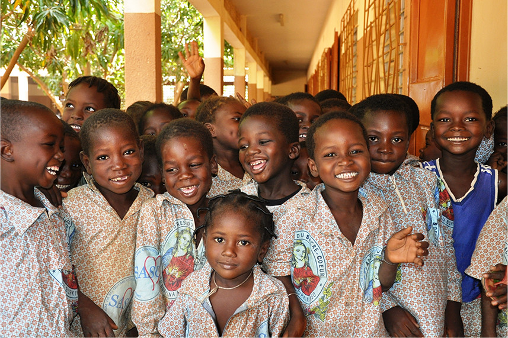
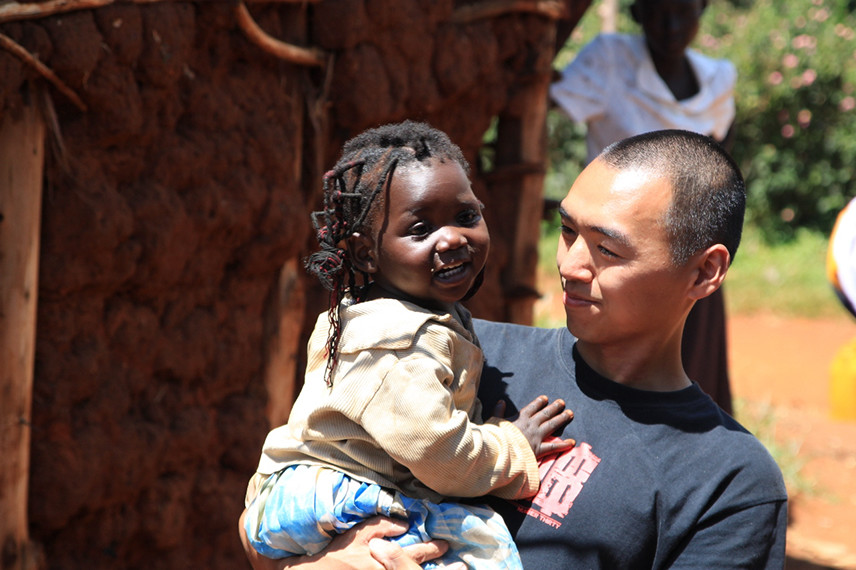
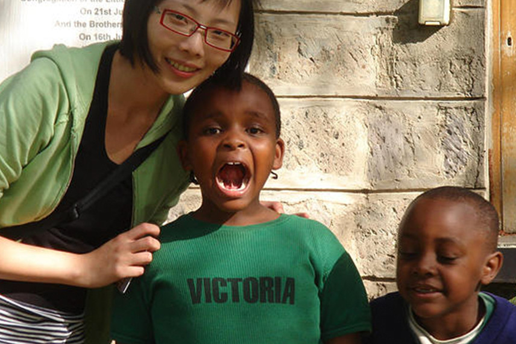
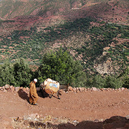

2015/ 10/ 20 二十三年，獻給GPS也找不到的世界角落——守護泰北苗村MaeSaMai的黃和美 Read More 02  2015/ 10/ 20 二十三年，獻給GPS也找不到的世界角落——守護泰北苗村MaeSaMai的黃和美 2015/ 10/ 20 和這大道一起，在人眼底一覽無遺。不過，浩浩袤袤的路面，很快就露出了破綻，街上沒畫分隔線，只有幾個紅綠燈，聽說，交通常是大塞車而動彈不得。而車水馬龍，還帶來與台灣幾分相似的畫面——小販紛紛抓住兜售物品的 ... Read More  2015/ 10/ 20 從到處躲警察的塗鴉客，變成送鞋到肯亞的英文老師——「舊鞋救命」楊右任 Read More 2015/ 10/ 20 二十三年，獻給GPS也找不到的世界角落——守護泰北苗村MaeSaMai的黃和美 Read More  2015/ 10/ 20 去非洲，不是為了「找自己」——張博涵 Read More 2015/ 10/ 20 撿傢俱，為了不讓自己被世界改變——心繫西藏的「唐青古物商行」唐青 Read More 2015/ 10/ 20 從到處躲警察的塗鴉客，變成送鞋到肯亞的英文老師——「舊鞋救命」楊右任 Read More 2015/ 10/ 20 二十三年，獻給GPS也找不到的世界角落——守護泰北苗村MaeSaMai的黃和美 Read More 2015/ 10/ 20 去非洲，不是為了「找自己」——張博涵 Read More 2015/ 10/ 20 撿傢俱，為了不讓自己被世界改變——心繫西藏的「唐青古物商行」唐青 Read More
Top Stories of Light 微光精選故事 2015/ 10/ 20 從到處躲警察的塗鴉客，變成送鞋到肯亞的英文老師——「舊鞋救命」楊右任 Read More 01 01 從到處躲警察的塗鴉客，變成送鞋到肯亞的英文老師——「舊鞋救命」楊右任 2015/ 10/ 20 二十三年，獻給GPS也找不到的世界角落——守護泰北苗村MaeSaMai的黃和美 Read More 02 02 二十三年，獻給GPS也找不到的世界角落——守護泰北苗村MaeSaMai的黃和美 2015/ 10/ 20 去非洲，不是為了「找自己」——張博涵 Read More 03 03 去非洲，不是為了「找自己」——張博涵 2015/ 10/ 20 撿傢俱，為了不讓自己被世界改變——心繫西藏的「唐青古物商行」唐青 Read More 04 04 撿傢俱，為了不讓自己被世界改變——心繫西藏的「唐青古物商行」唐青 2015/ 10/ 20 二十三年，獻給GPS也找不到的世界角落——守護泰北苗村MaeSaMai的黃和美 Read More 05 05 二十三年，獻給GPS也找不到的世界角落——守護泰北苗村MaeSaMai的黃和美 Stories Around The World 看看其他世界角落的故事 非洲 Africa  北非 North Africa 東南亞 Asia 東亞 Asia 中東 Asia 南美 America